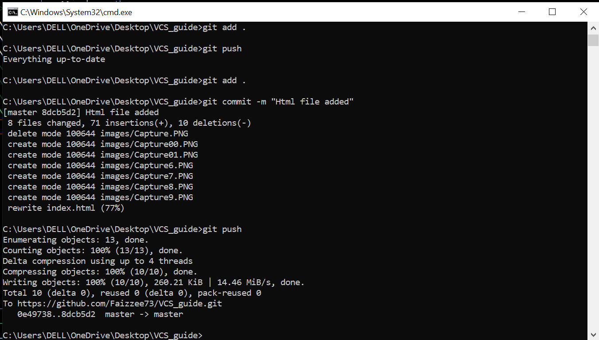

Click on the plus(+) sign or the right top of you screen
Write the name of the repository and make the acces public if you want everyone to see it
Copy the url of the repository
Open your Terminal and move to the directory where you want to clone the repo. And run the command: git clone repo-url
Add new file in your local repo folder
Use the git add . for adding all the changes made in all files. And then run the git commit -m "commit-message" for commiting the local changes to be pushed to remote repo.
Use the git add . for adding all the changes made in all files. And then run the git commit -m "commit-message" for commiting the local changes to be pushed to remote repo.
Use the git push for pushing all the changes made in all files. And then run the git commit -m "commit-message" for commiting the local changes to be pushed to remote repo.
pushing html file to the git repository
